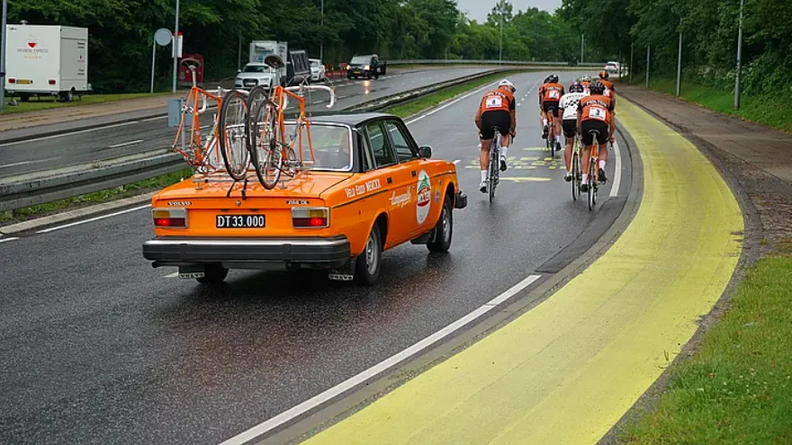

Squadra Molteni vinder Tour de France Grand Depart

Med en suveræn sejr på 3. etape, hvor Squadra Molteni vandt alle bjergpoint, pointspurten og kom i mål næsten 4 timer før Dylan Groenewegen og resten af pro-feltet, blev retroholdet sikker vinder Tour de France Grand Depart.
– Vi har udnyttet det wildcard Christian Prudhomme gav os tilbage i 2019 til fulde. På alle 3 etaper viste vi, at et retrohold sagtens kan være med ved verdens største cykelløb. Jeg er så stolt af holdet, lyder det fra en glad sportsdirektør Klaus Maarup Kjærsgaard.

Magisk 3. etape
Med list og snilde stak Squadra Molteni fra km 0 i Vejle klokken 06.30 – længe før pro-feltet var stået op. Og længe før søndag den 3. juli blev til en varm og solrig sommerdag – havde Squadra Molteni tilbagelagt de første 27 km og var på vej op af Côte de Koldingvej i støvregn og på våde veje. Jeppe Thiemer vandt bjergspurten på Côte de Koldingvej og halede lige så stille ind på Magnus Cort.


Mellem Vejle og Kolding blev der kørt tempokørsel a la formazione. Vejret var ved at klare op, og de blygrå tunge skyer med morgenregn var ved at gå i opløsning
Efter Kolding klarede vejret op, og den smukkeste sommerdag lå foran. Efter 82 km var det tid til 2. bjergspurt ved Côte de Hejlsminde Strand, som Jeppe Thiemer også vandt, så han nu for alvor åndede Magnus Cort i nakken.
Kun 8 km længere fremme, i udkanten af Christiansfeld, skulle der køres om point til den grønne trøje. Her blev det til et hårdt opgør mellem Molteni og Peugeot – men med et fabelagtigt leadout fra 500 meter-stregen af Max Maximun Nielsen, vandt Kaptajn Bjørnsteen med 3 – 4 cykellængder foran Pelle Clemmesen, Peugeot.

Efter det hårdt opskruede tempo mod pointspurten, var der tid til et kort stop ved Honningkagehuset i Christiansfeld.
Flere af rytterne havde siden Kolding plaget efter at få en honningkage i Christiansfeld, så jeg vurderede, at vi godt kunne sætte 10 minutter over styr, lyder der fra Klaus Maarup Kjærsgaard, der også selv fik tanket både kaffe og kager.

Med honningkager i maven blev der nu sat tempo på med Côte de Genner Strand ved 123 km mærket. Her var det igen Jeppe Thiemer, der vandt – og han var a point med Magnus Cort – og var på det tidspunkt i den prikkede trøje.

Kaptajn Bjørnsteen havde uheldigvis lidt problemer med sin bagskifter på vej op af Côte de Genner Strand, men efter nærmest akrobatisk arbejde af mekanikeren, blev bagskifteren fikset kort før toppen – og Kaptajnen kunne kort efter kalde til formazione – og kursen var nu stik syd mod Aabenraa, Gråsten og Sønderborg, hvor Kong Kristians Bro indpakket i gult ventede.

De sidste 8 km inde i Sønderborg gik op og ned, rundt i skarpe sving og over toppede brosten, med Jeppe Thiemer og Kristian Blume sat til at holde et godt og sikkert pace frem mod Ultimo Kilometro.

Resten var en en formssag: Squadra Molteni havde lidt over 4 timer ned til feltet, så det blev til paradekørsel i mål.
Vi vandt! Igen. Jeg er meget tilfreds. Meget tilfreds, lød der fra sportsdirektør Klaus Maarup Kjærsgaard kort efter passagen af målstregen.
FORZA SQUADRA MOLTENI!
VIVE LE TOUR!